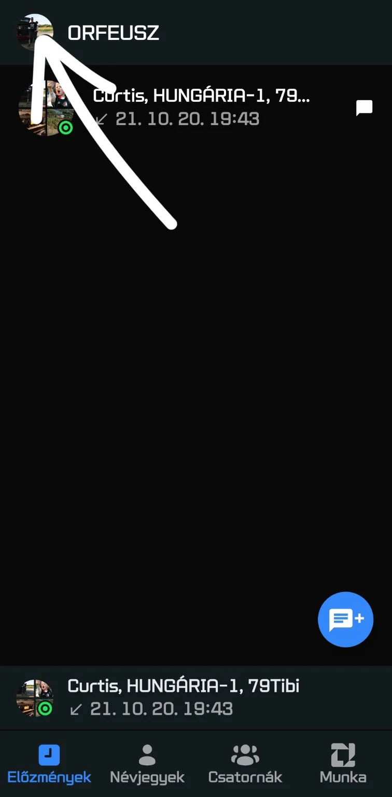
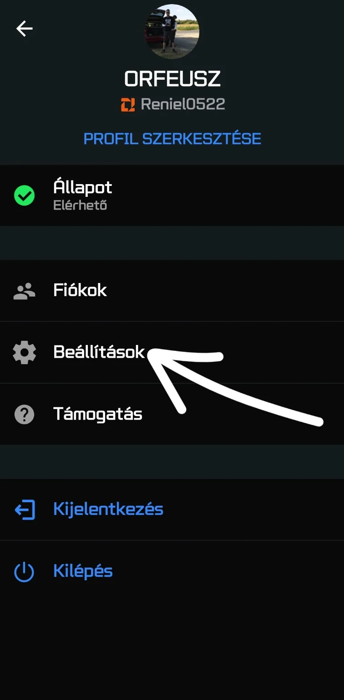
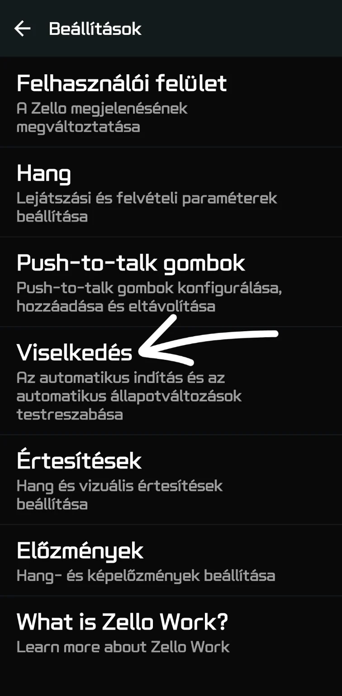
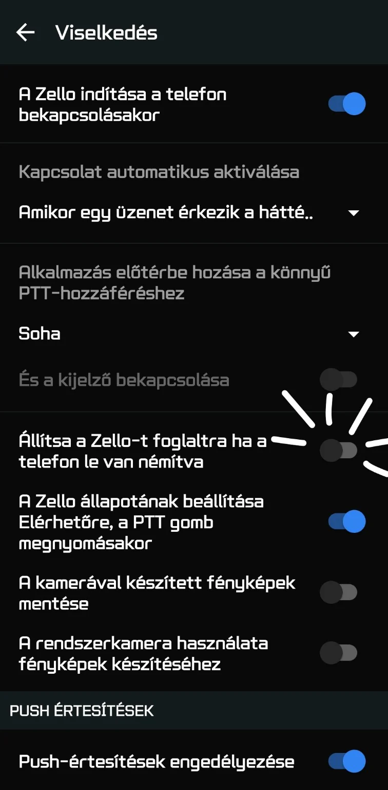
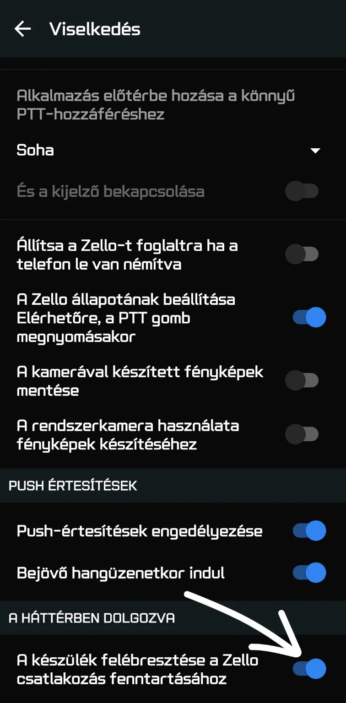
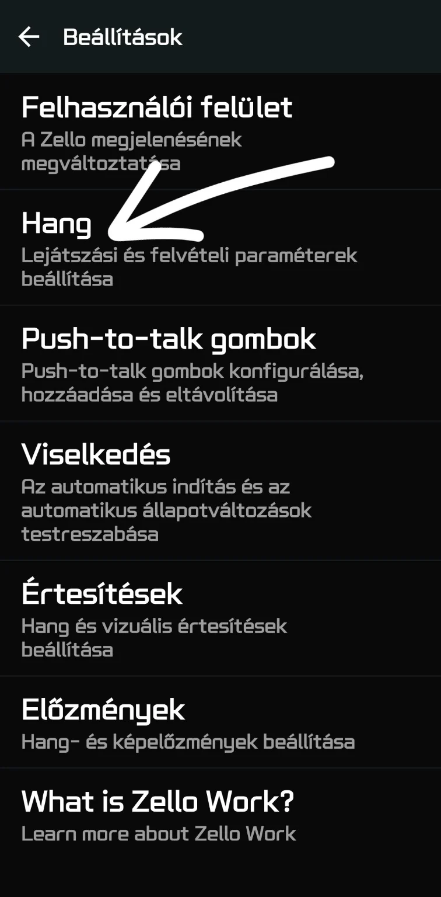
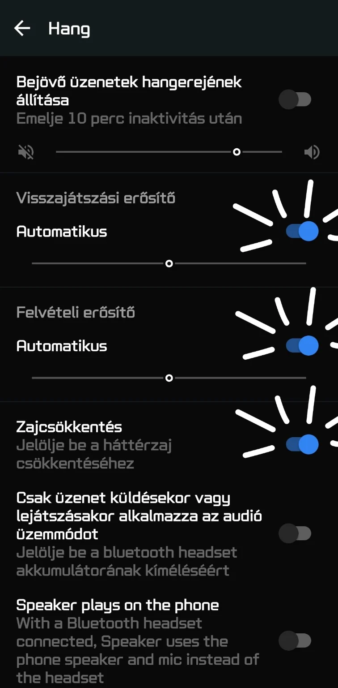

Zello beállítása
Az alábbi képernyőképek az Orfeusz Gateway használatához összeállított ajánlott Zello-beállításokat mutatják. A fehér nyilak és kiemelések az érintett menüpontokat, illetve kapcsolókat jelölik.
1. Nyisd meg a Zello profilját
A Zello főképernyőjén nyisd meg a profilmenüt, majd válaszd a Beállítások lehetőséget.



2. Viselkedés és háttérműködés
A képeken jelölt példában a Zello automatikus indítása, a PTT-gomb megnyomásakor az Elérhető állapot beállítása, a push-értesítések és a készülék ébren tartása van engedélyezve. A „telefon néma módban” Busy állapotot beállító kapcsoló kikapcsolt.


3. Hangbeállítások
A példában a lejátszási és felvételi erősítő automatikus módban működik, a zajcsökkentés be van kapcsolva. A további hangopciók a képen látható állapotban maradnak.


4. Ha halk a kapuról a rádióra továbbított adás
Ez az az eset, amikor a Zello felől érkező hangot a rádión hallod túl halknak. A hangerőt az alábbi sorrendben ellenőrizd és növeld:
- Android média-hangerő: növeld az Orfeusz Gateway-t futtató Android-eszköz média-hangerőjét.
- Zello visszajátszási erősítés (Playback Gain): ha továbbra is halk, emeld a Zello alkalmazás visszajátszási erősítését.
- Interfész potmétere: ha még mindig halk, fokozatosan tekerd a rádióinterfész potméterét a maximum felé.
5. Ha a rádió felől érkező adás halk a Zello felé
Ez az az eset, amikor a rádióba beszélnek, de a Zello-felhasználók halknak hallják az átjátszott adást. Ilyenkor:
- Rádió hangerő: növeld a kapura csatlakoztatott rádió hangerejét.
- Zello felvételi erősítés (Recording Gain): ha továbbra is halk, emeld a Zello alkalmazás felvételi erősítését.
6. Ha csak egyes Zello-felhasználók hallhatók halkan
Ha a kapura csatlakozó rádión csak bizonyos Zello-felhasználók adása halk, miközben mások megfelelő hangerővel hallhatók, állítsd be az érintett felhasználó egyéni hangerőszintjét a Zello alkalmazásban. Ez felhasználónként külön szabályozható.
A hangerő- és erősítésértékeket mindig kis lépésekben változtasd. Minden módosítás után ellenőrizd a hangminőséget, és kerüld a túlvezérlést, a torzítást.